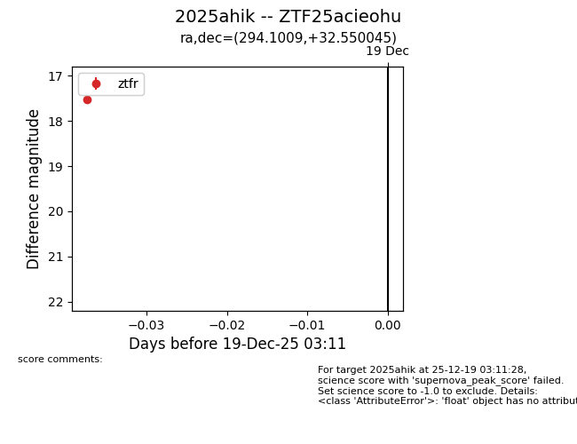
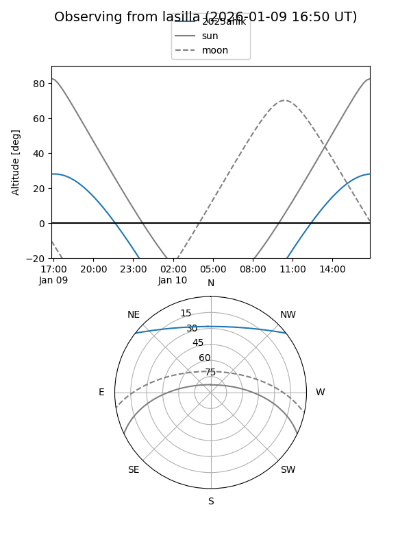
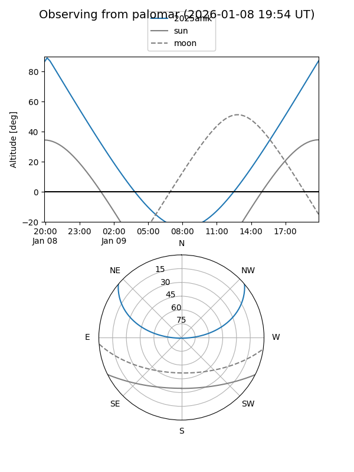

2025ahik
Target 2025ahik at 2025-12-19 03:12
Aliases and brokers:
FINK: fink-portal.org/ZTF25acieohu
Lasair: lasair-ztf.lsst.ac.uk/objects/ZTF25acieohu
ALeRCE: alerce.online/object/ZTF25acieohu
TNS: wis-tns.org/object/2025ahik
YSE: ziggy.ucolick.org/yse/transient_detail/2025ahik
alt names
ZTF25acieohu (ztf,fink_ztf)
2025ahik (tns,yse)
Coordinates:
equatorial (ra, dec) = 294.1009,+32.55005
equatorial (HMS+DMS) = 19:36:24.23,+32:33:00.16
galactic (l, b) = (66.7469,+5.68680)
Flags:
Photometry:
last ztfr=17.53
1 ztfr detections
Lightcurve

Visibility


Additional plots